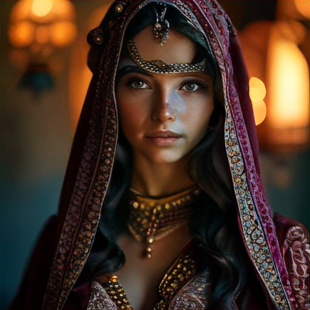

Photography of a tree with a heart, showcasing a whimsical, twisted tree trunk forming a perfect heartshaped void, set against a dreamy, ethereal forest backdrop...
shot in fe gm 35mm f1.4 of asian female model, doe eyes,
A majestic Goddes of beauty, charming dressed in a regal, jeweled gown and ornate crown, her golden hair cascading down her back...
Jabberwock, hyperrealistic, photorealistic, high details, high quality, shot on Nikon D6, Galen Rowell, Peter Lik, Marc Adamus, David Muench.
pirate character portrait gray hair weathered face thick beard weathered face colorful headband patched clothing and ocean for the background
Smoked cheese hamburger with spicy tomato sauce., Editorial Photography, Photography, Shot on 70mm lens...

strawberries splashing, swirling liquid, realism, octane render, raytracing
A magazine quality photograph of the sky filled with lightning and starting to show the first light of dawn. No ground in the photo.

photo of Princess of Persia, beauty, wallpapers, in the style of light maroon and azure, wandering eye, oriental, portrait, hurufiyya, darkly romantic realism...
A highly realistic, closeup photograph of a beautiful 35 year old redread woman writing in her journal, sitting on her balcony wearing warm, stylish outfits. Shot on a Canon...
artificial intelligence, revolution, publishing, writer, hyperrealistic
photo realistic beautiful young gothic woman
groow cannabis, photo réal 4K
female character fantasy world, for fantasy story, protagonist, interesting and detailed clothes, beautiful, medieval fantasy cinematic shot photo taken by canon, photo taken by fuji...
an intellectual brunette girl, normal looking, portrait style, 25 years, fancy dress, a party in the background, beautiful eyes...
Lets express the bright hope of a sprout that bloomed after enduring for a long time in a barren soil
young blue dragon with horn lightning in the style of dd fantasy full body
ychedelic parrot looking at the camera fine art painting, in the style of fluid lines, 8k resolution...
youtube banner environment nature, no writing, fantasy, islam
tshirt vector, car in city graphic, synthwave, vivid colors, detailed
Portrait of an asian woman. She has pink violet hair style with modern complex hairdressing...
dragon dnd epic, full body, ultra wide angle, incredible detail, epic pose, in the style of Craig Mullins Realistic face, realistic hands, full body, hyper detailed dynamic scene...
Willem Dafoe is the only Jesus Christ Ill ever need
ghost of dragon, art style of kazuki takahashi,
hedgehog face, floating in space, wearing space suit no helmet, cinematic, 50mm f1.8, unreal engine
frozen heart broken neon
Maple tree in a bottle, elixir, the last dance of the sun bends into your palms the autumn light shines, the healing power of the Maple
silhouette of tree against the starry night, in the style of intense use of light and shadow, stockphoto, sharpprickly, rounded, kintsukuroi, sunrays shine upon it, coastal scenery
Capture a surreal portrait of a mythical creature against a bright yellow background. Dress them in a futuristic outfit with textural elements...

A pig dressed as a mason, by Bill Gekas
a cute and funny dragon giving a rose to the viewer cartoon style Pixar 3D
the witch Larina Nix